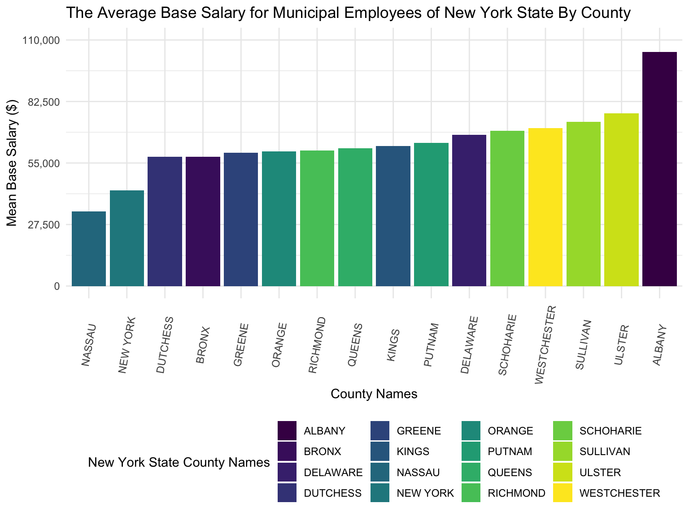
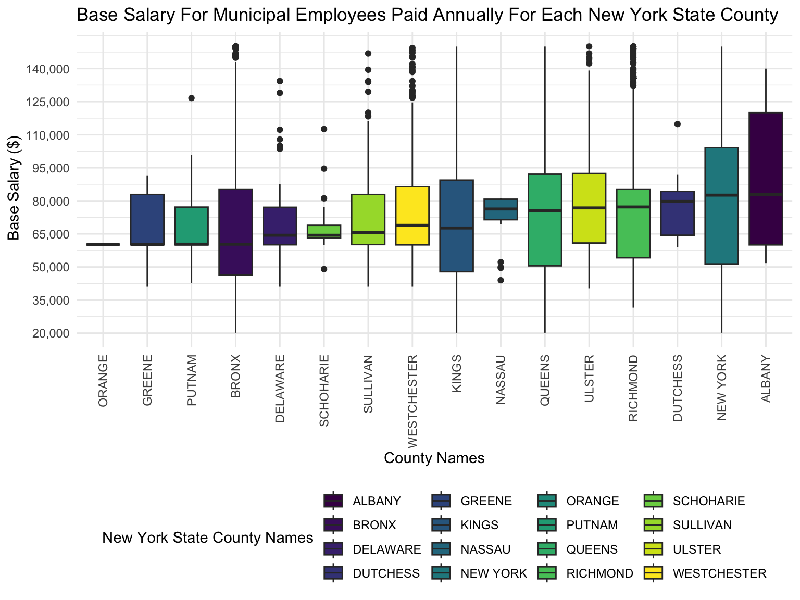
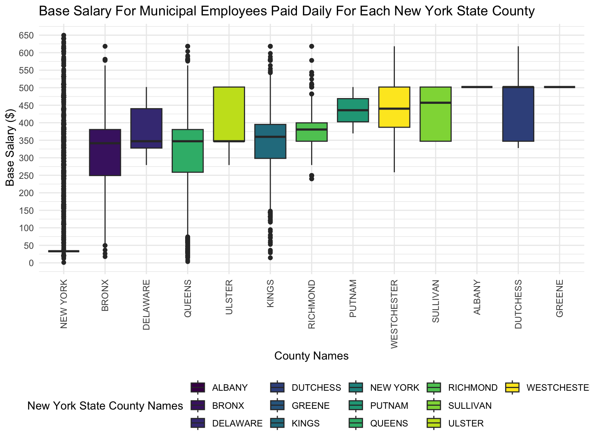
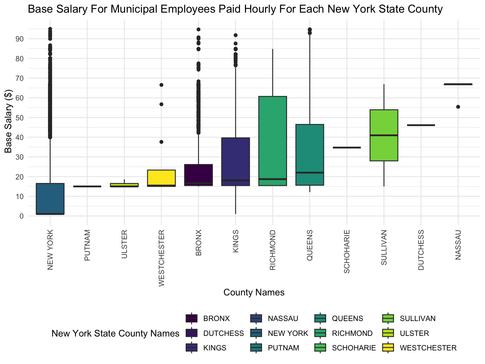
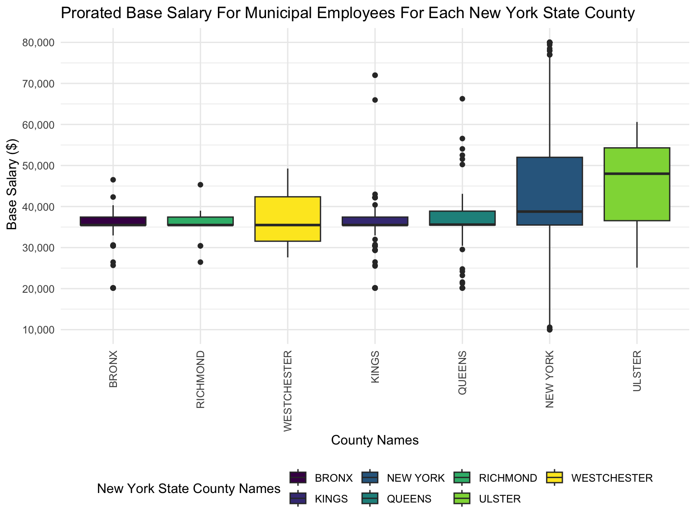

library(tidyverse)## ── Attaching packages ────────────────────────────────────────────────────────── tidyverse 1.3.2 ──
## ✔ ggplot2 3.4.0 ✔ purrr 0.3.4
## ✔ tibble 3.1.8 ✔ dplyr 1.0.10
## ✔ tidyr 1.2.1 ✔ stringr 1.4.1
## ✔ readr 2.1.2 ✔ forcats 0.5.2
## ── Conflicts ───────────────────────────────────────────────────────────── tidyverse_conflicts() ──
## ✖ dplyr::filter() masks stats::filter()
## ✖ dplyr::lag() masks stats::lag()library(janitor)##
## Attaching package: 'janitor'
##
## The following objects are masked from 'package:stats':
##
## chisq.test, fisher.testlibrary(viridis)## Loading required package: viridisLitelibrary(plotly)##
## Attaching package: 'plotly'
##
## The following object is masked from 'package:ggplot2':
##
## last_plot
##
## The following object is masked from 'package:stats':
##
## filter
##
## The following object is masked from 'package:graphics':
##
## layoutlibrary(ggplot2)
knitr::opts_chunk$set(
echo = TRUE,
warning = FALSE,
fig.width = 8,
fig.height = 6,
out.width = "90%"
)
options(
ggplot2.continuous.colour = "viridis",
ggplot2.continuous.fill = "viridis"
)
scale_colour_discrete = scale_colour_viridis_d
scale_fill_discrete = scale_fill_viridis_d
theme_set(theme_minimal() + theme(legend.position = "bottom"))payroll_data =
read_csv("data/payroll_data.csv")## Rows: 594234 Columns: 10
## ── Column specification ───────────────────────────────────────────────────────────────────────────
## Delimiter: ","
## chr (5): agency_name, pay_basis, leave_status, county_name, job_title
## dbl (5): fiscal_year, start_year, base_salary, total_ot_paid, total_other_pay
##
## ℹ Use `spec()` to retrieve the full column specification for this data.
## ℹ Specify the column types or set `show_col_types = FALSE` to quiet this message.Exploratory analysis for our primary outcome of whether there is a significant difference in the mean base salary of employees in New York State by county in 2022.
mean_base_salary_plot =
payroll_data %>%
group_by(county_name) %>%
summarize(
mean_base_salary = mean(base_salary, na.rm = TRUE)) %>%
ggplot(aes(x = reorder(county_name, mean_base_salary), y = mean_base_salary, fill = county_name)) +
geom_bar(position = "dodge", stat = "identity") +
scale_y_continuous(
labels = scales::comma,
limits = c(0, 110000),
breaks = seq(0, 110000, by = 27500)) +
labs(
x = "County Names",
y = "Mean Base Salary ($)",
title = "The Average Base Salary for Municipal Employees of New York State By County",
fill = "New York State County Names"
) +
theme(axis.text.x = element_text(angle = 80, vjust = 0.5, hjust = 0.50))
mean_base_salary_plot
Boxplots was created to illustrate the differences in the median base salary by annually for all New York state counties.
Base Salary By Annual Pay Basis By New York State Counties Plot
pay_basis_tibble =
payroll_data %>%
filter(pay_basis == "Annually") |>
group_by(county_name) %>%
summarise(median_base_salary = median(base_salary))
Median_base_salary_plot_annually =
payroll_data %>%
filter(pay_basis == "Annually") |>
left_join(pay_basis_tibble, by = "county_name") %>%
ggplot(aes(x = reorder(county_name, median_base_salary), y = base_salary,
fill = county_name)) +
geom_boxplot() +
scale_y_continuous(
labels = scales::comma,
limits = c(20000, 150000),
breaks = seq(20000, 150000, by = 15000)) +
labs(
x = "County Names",
y = " Base Salary ($)",
title = "Base Salary For Annually-Paid Municipal Employees For Each New York State County",
fill = "New York State County Names"
) + theme(axis.text.x = element_text(angle = 90, vjust = 0.5, hjust = 1))
Median_base_salary_plot_annually
Boxplots was created to illustrate the differences in the median base salary by daily for all New York state counties.
pay_basis_daily_tibble =
payroll_data %>%
filter(pay_basis == "Daily") |>
group_by(county_name) |>
summarise(median_base_salary_daily = median(base_salary))
Median_base_salary_plot_daily =
payroll_data %>%
filter(pay_basis == "Daily") |>
left_join(pay_basis_daily_tibble, by = "county_name") %>%
ggplot(aes(x = reorder(county_name, median_base_salary_daily) ,
y = base_salary, fill = county_name)) +
geom_boxplot() +
scale_y_continuous(
labels = scales::comma,
limits = c(0,650),
breaks = seq(0, 650, by = 50)) +
labs(
x = "County Names",
y = " Base Salary ($)",
title = "Base Salary For Daily-Paid Municipal Employees For Each New York State County",
fill = "New York State County Names"
) + theme(axis.text.x = element_text(angle = 90, vjust = 0.5, hjust = 1))
Median_base_salary_plot_daily
Boxplots was created to illustrate the differences in the median base salary by hourly for all New York state counties.
pay_basis_hourly_tibble =
payroll_data %>%
filter(pay_basis == "Hourly") |>
group_by(county_name) %>%
summarise(median_base_salary_hourly = median(base_salary))
median_base_salary_plot_hourly =
payroll_data %>%
filter(pay_basis == "Hourly") |>
left_join(pay_basis_hourly_tibble, by = "county_name") %>%
ggplot(aes(x = reorder(county_name, median_base_salary_hourly),
y = base_salary, fill = county_name)) +
geom_boxplot() +
scale_y_continuous(
labels = scales::comma,
limits = c(0,95),
breaks = seq(0,95, by = 10)) +
labs(
x = "County Names",
y = " Base Salary ($)",
title = "Base Salary For Hourly-Paid Municipal Employees For Each New York State County",
fill = "New York State County Names"
) + theme(axis.text.x = element_text(angle = 90, vjust = 0.5, hjust = 1))
median_base_salary_plot_hourly
Boxplots was created to illustrate the differences in the median base salary based on prorated for all New York state counties.
pay_basis_prorated_tibble =
payroll_data %>%
filter(pay_basis == "Prorated Annual") |>
group_by(county_name) %>%
summarise(median_base_salary_prorated = median(base_salary))
median_base_salary_plot_prorated =
payroll_data %>%
filter(pay_basis == "Prorated Annual") |>
left_join(pay_basis_prorated_tibble, by = "county_name") %>%
ggplot(aes(x = reorder(county_name, median_base_salary_prorated),
y = base_salary, fill = county_name)) +
geom_boxplot() +
scale_y_continuous(
labels = scales::comma,
limits = c(10000,80000),
breaks = seq(10000, 80000, by = 10000)) +
labs(
x = "County Names",
y = " Base Salary ($)",
title = "Base Salary For Prorated-Annually-Paid Municipal Employees For Each New York State County",
fill = "New York State County Names"
) + theme(axis.text.x = element_text(angle = 90, vjust = 0.5, hjust = 1))
median_base_salary_plot_prorated